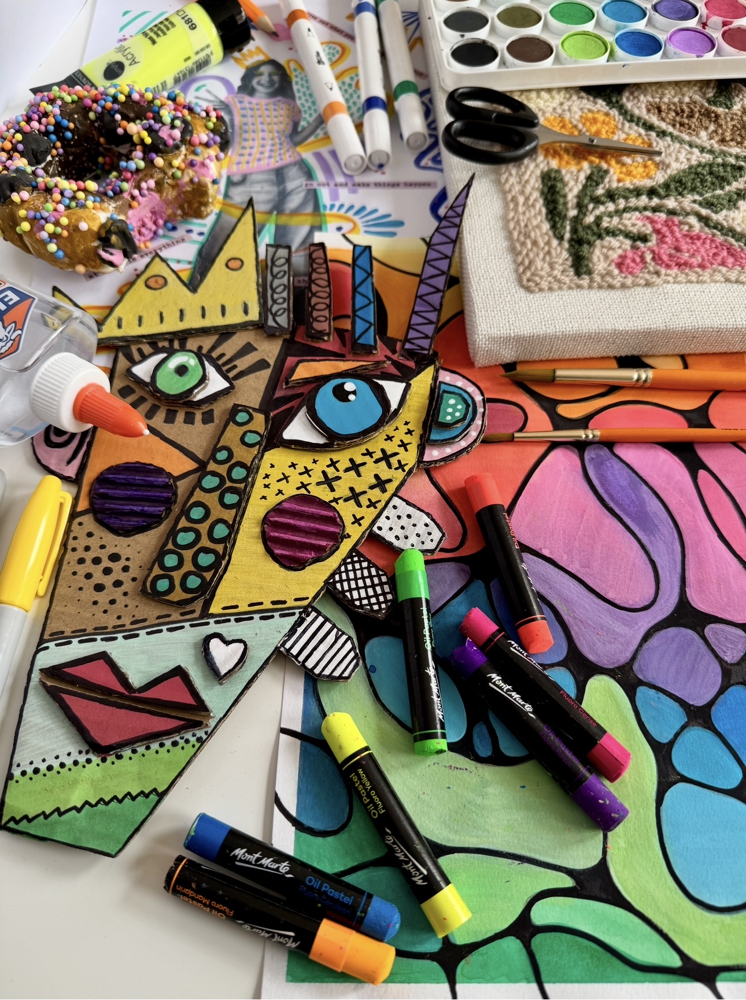
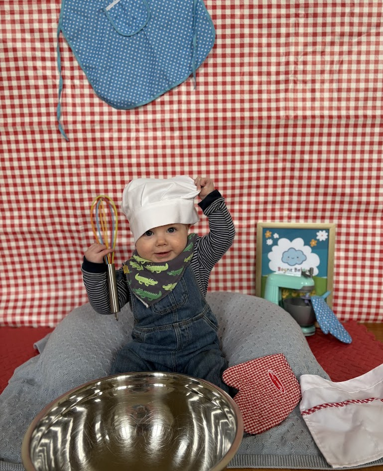
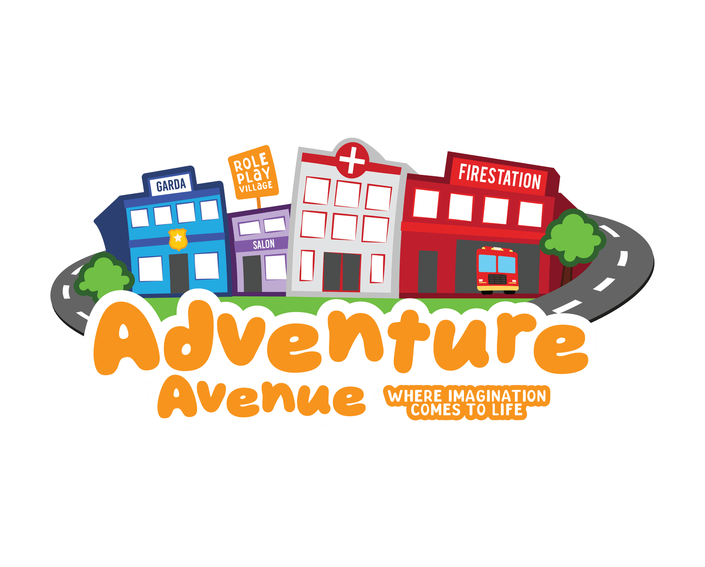
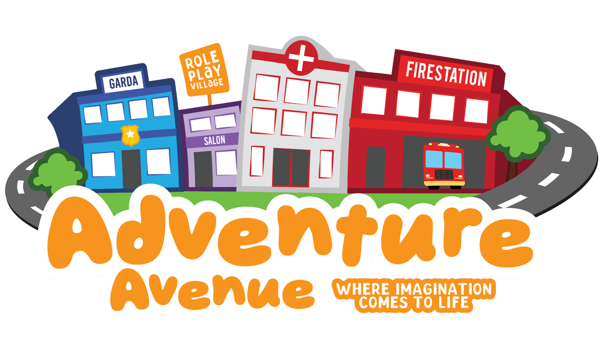
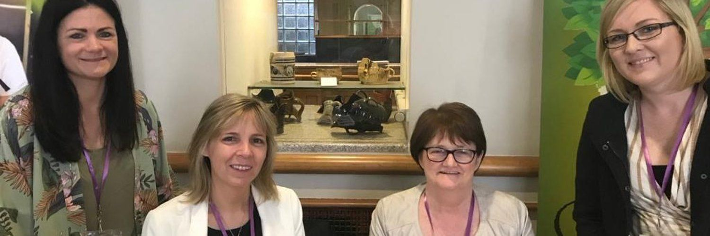
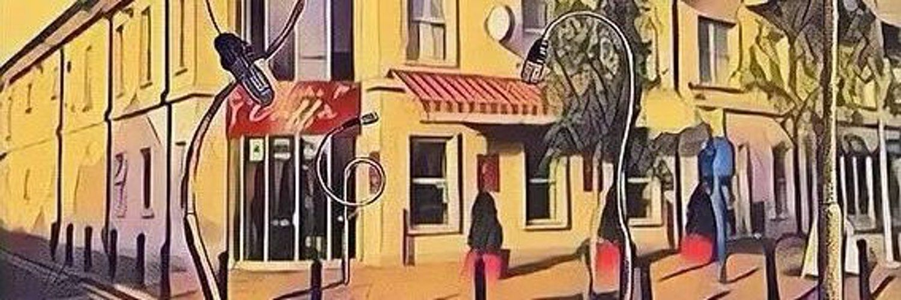
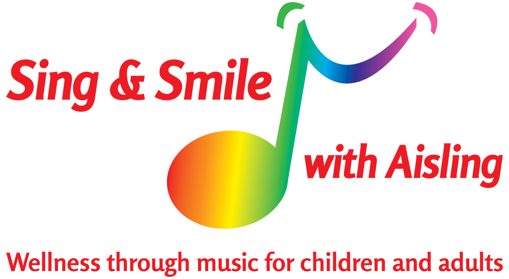
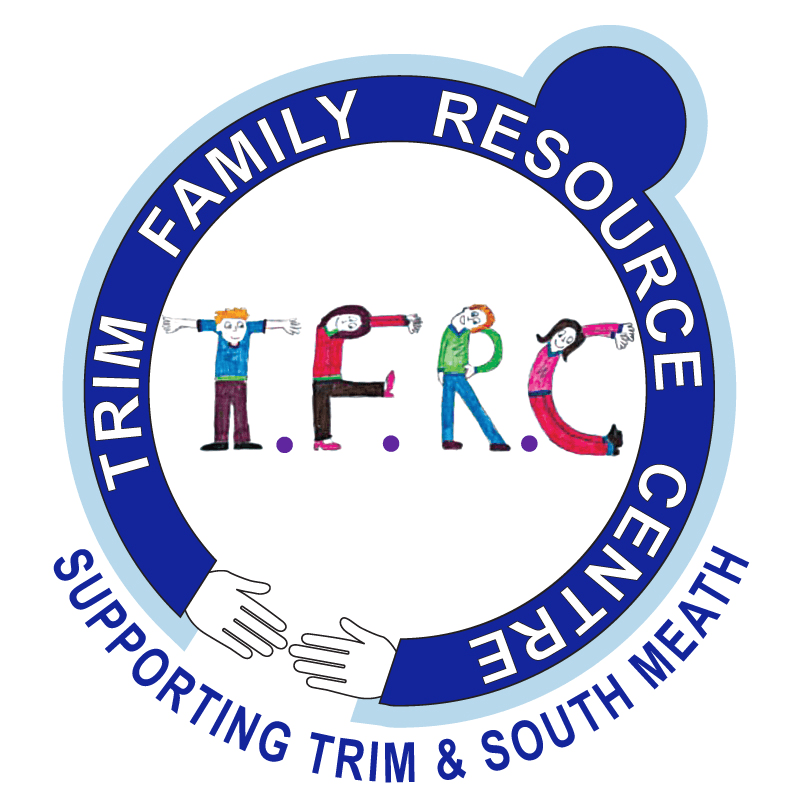
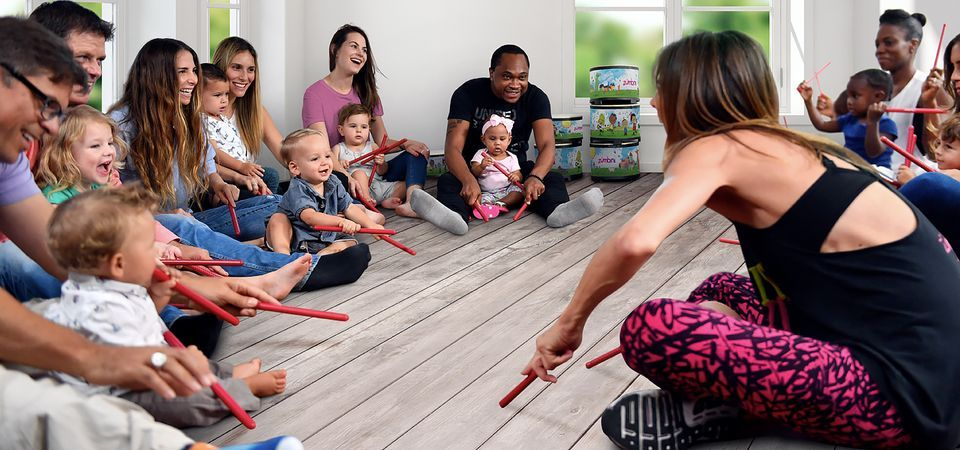
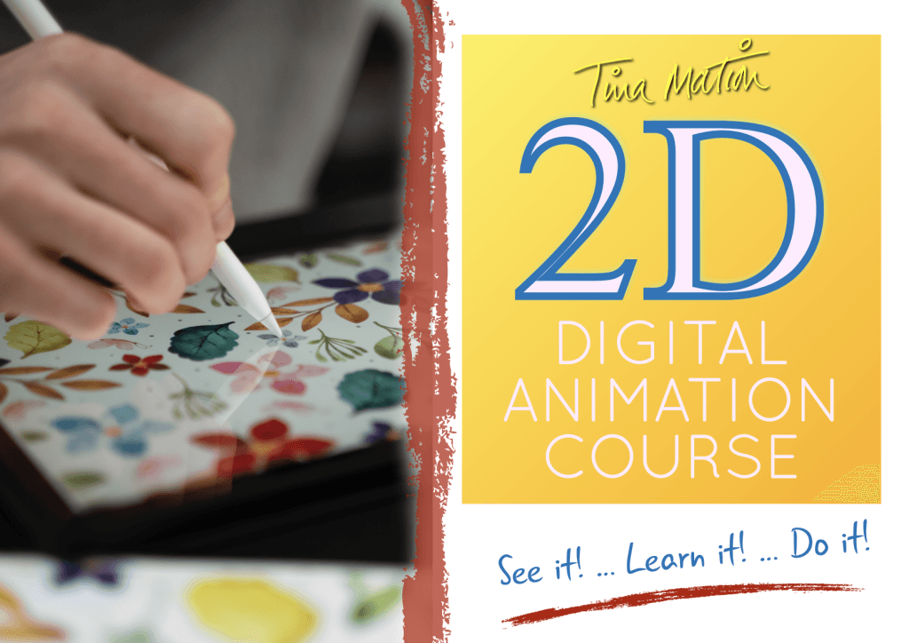

Kids Activities in Meath
Browse 59 kids activities and classes in Meath. Popular categories in Meath include Parent-and-toddler, Developmental, Arts and crafts.
Browse activities in Meath by category


Art Clubs with Playful Tribe
Playful Tribe's Afterschool Art Clubs are relaxed, process-led sessions focused on creativity, self-expression, and enjoying the process of making art. We explore a range of materials, including air-dry clay, watercolours, oil pastels, acrylics, drawing, and mixed media, while learning to use professional tools and techniques. All materials are included. Mondays 4-5:30pm (Junior & Senior Infants) and Tuesdays 4-5:30pm (1st Class - 6th Class). Classes are drop-off and take place in our home studio in Bettystown, and are best suited to children who are comfortable participating independently without one-to-one support/SNA. Our art classes run on a continuous basis throughout the year, and you can join at any time once a vacancy opens in the class of your choice.
View full details →
Baby Massage with Laura – Navan & Surrounds
Baby massage classes led by an experienced Paediatric/Neonatal Intensive Care Nurse (10+ years), open to all babies from birth to 12 months, including those with special needs, complex needs, or life-limiting conditions. There is plenty of room for medical equipment such as suction machines, portable ventilators, or feeding pumps, and massage can be adapted for babies with a feeding tube, stoma bag, tracheostomy, CPAP/BiPAP mask, PEG tube, or similar. Classes run in Navan at Red River Yoga Studio (Wednesdays at 10am) and Wilkinstown Community Centre (Mondays at 10am), with 1:1 classes also available. Sessions are relaxed and baby-led, so feeding, changing, walking around, or cuddling your baby during class is fine - just bring a small blanket, as yoga mats, cushions and oils are provided. Tea, coffee and sweet treats are served in the second part of the class, giving parents a chance to sit, chat and get to know each other. Contact via Instagram DM @baby_massage_with_laura or email lauramcq.babymassage@gmail.com
View full details →

Baby Sensory Dunboyne
Baby Sensory classes are designed to support your baby's development from birth to 13 months through gentle sensory activities, music, movement and play. Every activity is carefully designed using research into early childhood development, supporting your baby's sensory, physical and cognitive growth in a natural, fun way. Each class is structured for your baby's stage, from tiny newborns to active explorers, in a warm, welcoming environment. Parents value the class as a special time to bond with their baby, support early development and key milestones, meet other local parents, and enjoy the moment together without pressure. Sessions include sensory play (lights, textures, bubbles and more), music and movement, and varied, age-appropriate activities, all designed to stimulate your baby's senses while keeping things calm and enjoyable for you both.
View full details →

Boyne Babies Sensory Classes
Welcome to Boyne Babies — sensory-rich baby and toddler classes designed to support early development, exploration, and parent–child bonding in a fun and nurturing environment. Our weekly themed sessions include music, movement, lights, textures, messy play, soft play, and interactive sensory activities tailored to different stages, from non-walkers to toddlers aged 2 years. Boyne Babies is also a welcoming space for parents to connect, meet other local families, and enjoy quality time with their little ones in a relaxed and supportive setting. Classes take place weekly at Julianstown Community Centre, offering a calm, engaging, and development-focused experience for both children and parents.
View full details →
Kids Classes in Kells - Kells Family Resource Centre
Kells Family Resource Centre offers a number of classes/groups to support children and families. Kells Angels Youth Club (8-12 years): registration is €10, plus a €3 fee at each café meeting. Kells Foróige Youth Café (13-17 years): registration is €10, plus a €2 fee at each café meeting. Art classes (5-12 years): €10 a class. Little Folk, music with Kyle (3 months to 5 years). Brickx Club (5-12 years): €12 per child. Kells CoderDojo (8-17 years): free. Teen Neuro Space: registration €10, plus a €2 fee at each meeting. For more information, see https://www.kellsfrc.ie/childrenandyouth
View full details →

Adventure Avenue Ltd
Adventure Avenue Ltd is a vibrant, purpose-built children’s role play and learning centre located in Ashbourne, Co. Meath, Ireland. Designed as a colourful mini town, Adventure Avenue invites children aged 0–10 years to explore imagination, creativity, and learning through hands-on role play. Babies under 7 months old attend free of charge. Our interactive streets feature child-sized buildings such as a supermarket, salon, emergency services, and other familiar community spaces, encouraging social skills, confidence, communication, and learning through play. Adventure Avenue offers inclusive 1.5-hour play sessions with parent or guardian supervision required at all times. Our friendly Adventure Avenue team is always on hand to help, ensuring a safe, supportive, and enjoyable experience for every child. We welcome open play, group visits, special occasions, school tours, preschools, crèches, and group bookings. Visits are aligned with Aistear and tailored to suit the age and needs of each group, providing a fun, safe, and engaging learning environment.
View full details →

Ashbourne Library Parent, Baby and Toddler Group
Ashbourne Library has fantastic groups to offer parents of newborns, toddlers and kids of all ages. The Parent and Toddler Group focuses on stories and rhymes to foster a love of books while helping build literacy skills in your little ones - a great place to meet parents, carers and grandparents while your toddler mingles with their peers. Location: Ashbourne Library, Apartment 2, The Square, Killegland St, Killegland, Ashbourne, Co. Meath. Day/Time: every Wednesday, 10.30-11.30am (during school term time - check with the library during school holidays, as dates may change to facilitate additional classes and groups). Cost: free. Contact: Jennifer, 01 83558185. Ashbourne Library also offers a tummy time session called Magic Tummy Time, a special time for babies who haven't started to crawl yet - babies can play beneath the light projections of the interactive Tovertafel (Magic Table) while parents and minders get to know each other, with books for babies and books on parenting on display. Day/Time: every Friday, 10-11am and 11am-12pm (2 sessions). Cost: free, but booking is essential as spaces are limited. Contact: Jennifer, 01 83558185.
View full details →Athboy Parent, Baby and Toddler Group
Athboy Parent and Toddler Group is a pop-in group that encourages new faces to come along, meet other parents (while getting a caffeine kick from a coffee), and let the kids have some fun. Kids get to play with toys and books, have a sing and a dance, and even take part in craft sessions. They run seasonal events such as Halloween parties, and also encourage community with parents' nights, making it a great way to meet new people if you're new to the area. Location: St James Hall, Main St, Town Parks, Athboy, Co. Meath. Day/Time: every Friday, 10am-12pm. Cost: free. Contact: Caoimhe, 086 1617597.
View full details →Baby Massage With Laura
Baby massage classes with a PICU/NICU nurse, in 2 locations: Navan and Wilkinstown. Come meet other parents and bond with your baby in a relaxed and calm environment. Every class is followed by tea/coffee/a sweet treat, giving time to chat and get to know other parents. All babies welcome, 0-12 months. Babies with additional needs, complex needs, or life-limiting conditions are welcomed and encouraged to attend, with plenty of space for medical equipment such as portable ventilators, suction machines, and feeding pumps. Massage can be adapted for all needs, e.g. stoma bags or feeding tubes. As a PICU/NICU nurse, I'm very experienced in caring for babies with additional needs and their families. 1:1 classes also available. Currently Monday mornings at Wilkinstown Community Centre, 10am, and in Navan at the Red River Yoga Studio on Wednesdays at 10am (check socials in case time/location changes).
View full details →
Boyne Babies
At Boyne Babies, we create a welcoming space where babies learn through sensory play, and parents connect through community. Each weekly session is designed to support your baby's early development through music, movement, lights, textures, and gentle sensory exploration, with a new theme every week to keep things fresh, fun, and engaging, helping your little one discover new experiences while building cognitive and physical milestones. Time & location: Wednesdays, 11am-12pm, Julianstown Community Centre, A92 D250. Classes are open to babies aged 0-13 months and their caregivers, whether that's mum, dad, grandparents, or another loved one. Caregivers are required to stay for the duration of the class, helping you bond with your baby while connecting with other local parents and carers in a relaxed, supportive environment. Babies should wear comfortable clothing that allows easy movement and play. You may want to bring a small blanket or muslin for your baby to sit or lie on, a change bag with nappies, wipes, and a bottle or snack if needed, and a spare outfit, as sensory play can sometimes get a little messy.
View full details →Dunboyne Parent, Baby and Toddler Group
Dunboyne Parent and Toddler Group welcomes children from newborn to 3 years with their parents, grandparents, minders, au pairs etc. It's a friendly, relaxed group with open, casual play for the children to make new friends, while the grown-ups have a chat and a cup of tea/coffee. Location: Dunboyne Community Centre, Station Road, Dunboyne. Day/Time: every Tuesday, 10-11.45am (during school term). Cost: €3 per family. Contact: Jackie, 087 2494507.
View full details →Dunshaughlin Parent, Baby and Toddler Group
Dunshaughlin Parent, Baby and Toddler Group welcomes all mammies, daddies, nannies, grandads and carers with newborns to 3 years - feel free to come along with your little ones. Location: St Patrick's Hall, Main St, Dunshaughlin, Co. Meath. Day/Time: every Tuesday & Thursday (school term), 9.45-11.30am. Cost: €3 per family.
View full details →Enfield Parent & Toddler Group
Join us at the Enfield Baby & Toddler Group every Wednesday at the Na Fianna Clubhouse. Time: 10-11.30am. Buggy parking and tea and coffee available. Open to parents, mums-to-be, grandparents, and toddlers - all ages are welcome, and we're proud to be a volunteer-run community. To stay in the loop, send us a Facebook message to be added to our WhatsApp group. Admission: €3 per child, €4 for two children; prepaid events €6 per child. Some weeks feature prebooking events - check our Facebook page for details. We're also closed during midterms.
View full details →Kells Parent, Baby and Toddler Group
Kells Parent, Baby and Toddler Group is hosted by Kells Family Resource Centre, also known as the Bright Sparks playgroup. Bright Sparks Parent/Carer and Child is an early years play group supporting holistic development, a social space for parents and carers of children aged 0-3, with party days & celebrations, monthly play themes, and a positive environment with lots of fun for your little ones. Location: Kells Family Resource Centre, Lord Edward St, Archdeaconry Glebe, Kells, Co. Meath. Day/Time: every Monday morning, 10-11.45am (during term time). Cost: €3 per family.
View full details →Kentstown Parent & Toddler Group
A place where parents, grandparents and minders can meet, have a coffee and chat while the little ones play. We know how hard it can be to meet other parents or make friends when you have little ones, so we've set up this group so that parents, grandparents and minders can meet others in the area, have a coffee and chat, and let the little ones play. Thank you to everyone who has supported us so far - we look forward to seeing more new faces each week. Location: Seneschalstown GFC, Dollardstown, Co. Meath, C15 X51. Day/Time: every Friday, 10-11.45am (during school term time). Cost: €5 per family. Contact: Clare, 087-9743017.
View full details →
Kids French classes in Navan (3 to 12 years old)
Rendez-vous français offers a fun introduction to French for children. Children will discover the language and culture through games, stories, songs, art and craft, and even baking - our motto is that we learn better when we're having fun. Caroline is a French-qualified native teacher who has been teaching French in preschools, primary schools, and Rendez-vous français in Ireland for 15 years. We run 3 different age groups: 3 years old up to Senior Infants; 1st class up to 3rd class; and 4th class up to 6th class. Check our website for dates & times or get in touch. Location: Rendez-vous français, St Mary's Community Centre, Navan, Co. Meath.
View full details →
Laytown Parent, Baby and Toddler Group
Laytown Parent and Toddler Group is hosted by Crann Family Resource Centre. The Baby and Toddler Group is a stimulating, friendly environment which provides play experiences for babies and infants, promotes positive parent-child interaction, and offers advice and information support on child development for parents, guardians, caregivers and childminders. Location: East Coast Family Resource Centre, 5 Strand Haven, Laytown. Day/Time: every Thursday, 10am-12pm. Cost: free. Contact: Edel, 041-9828588.
View full details →Little Folk Music for Babies, Toddlers & Young Children
Little Folk is an early years music class for children aged 3 months to 5 years (or even older) and their adults. Featuring 45 minutes of live music, playing percussive instruments and movement with scarves, a good time is had by all. Classes explore rhythm, tempo and movement, featuring original and traditional children's music. Kyle has been writing and performing children's music for the last 11 years. Mondays, 10am, Oldcastle Masonic Hall, Co. Meath. Tuesdays, 10am & 11am, Mullingar Arts Centre. Wednesdays, 10am & 11am, Kells Family Resource Centre. Fridays, 10am & 11am, The Backyard, Cavan Town.
View full details →Little bears
A baby/toddler playgroup in Meath. We provide a creative and fun environment for little ones to explore. Tuesdays, Thursdays and Fridays, 10-11am. Any caregiver can attend, and caregivers are required to stay for the duration of the class.
View full details →Longwood Parent, Baby and Toddler Group
Longwood Parent and Toddler Group is a great group in the area for all the parents with young children - bring some toys, and the group provides tea. It's also known as the Wiggly Wonders playgroup. Join the Facebook group and pop along to the sessions to meet other adults while your toddler gets to make friends. Location: Longwood Preschool on the Green, Old National School, Longwood, Co. Meath, A83 H276. Day/Time: every Tuesday during school term, 10-11.45am. Cost: €3 per child, or €4 for two or more kids. Contact: Aiveen, 0861219002.
View full details →

Mum & Baby French Classes
Through nursery rhymes and stories, your baby will discover the sounds of a new language while having a lot of fun. What makes our classes different from any others? You'll be learning French too. As a new mum, I know how you need to do things just for yourself, whether it's exercising, reading, or learning French - but it's not always easy to have someone mind your baby while you go to a class. Our classes are made so you can come and learn French, and bring your little one with you. The classes are baby-led: if your baby is hungry, tired or grumpy, don't worry at all, we've all been there - feel free to feed, stand up, walk, rock and bounce. It's not only a class for your baby, but for yourself too, and you definitely deserve it. Caroline is a French-qualified native teacher who has been teaching French to all ages in Ireland for 15 years. She is also mum to a little girl, with whom she started the mum & baby classes 3 years ago. Tuesdays, 10.30-11.30am. From birth to pre-crawlers. Location: Rendez-vous français, St Mary's Community Centre, Navan, Co. Meath.
View full details →Mum & Baby Pilates with Éilis
My Mum & Baby Pilates class is a gentle and supportive postnatal exercise class designed to help mothers rebuild strength, improve posture, and reconnect with their bodies after birth, all while keeping baby close by. Classes focus on pelvic floor recovery, core strengthening, mobility and body alignment in a welcoming, baby-friendly environment. Stick around for a cup of tea and a chat afterwards and get to know other mums at a similar stage. No previous Pilates experience is needed. Time & location: Fridays at 10.45am, for a 6-week term, Deerpark Hub, Carlanstown, Co. Meath. Open to mothers with babies who are ideally in the pre-crawling stage.
View full details →

Navan Library Parent and Toddler Group
Navan Parent & Toddler Group is hosted by Navan Library. Come along for stories and rhymes at this Parent and Toddler session every Wednesday at Navan Library, followed by free play with toys and games provided. It's a way to keep the little ones entertained while equipping them with early literacy skills, and you can meet other parents for a chat too. Location: Navan Library, Railway St, Dillonsland, Navan, Co. Meath, C15 RW31. Day/Time: every Wednesday, 10.15-11.15am (check during school term breaks, as the group may sometimes be cancelled to facilitate kids' camps). Cost: free. Contact: 046 9021134.
View full details →
Neuroverse Explorers
Neuroverse Explorers is a vibrant club designed for neurodivergent tweens and teens to explore, create, and connect. Dive into fun STEM activities, from experiments to tech projects, in a welcoming and inclusive space where you can be yourself. Whether you’re building, experimenting or just hanging out, this is a place to chill and make friendships. Thursdays from 4:45pm-6:15pm.
View full details →
Oldcastle Library Parent and Toddler Group
Oldcastle Parent & Toddler Group is hosted by Oldcastle Library. Meet with other parents at these Parent & Toddler sessions and socialise your little ones at the same time, with plenty of free play and a story time too. New members are always welcome. Location: Oldcastle Library, Millbrook Rd, Oldcastle, Co. Meath, A82 N125. Day/Time: every Wednesday, 10.15-11.30am (check during school term breaks, as the group may sometimes be cancelled to facilitate kids' camps). Cost: free. Contact: 049-8542084.
View full details →Play and Music Meath
Classes created by experts in early childhood development. Run by a highly experienced facilitator with a background in music who specialises in play therapy. Classes are child led, building on each child's own abilities. Wednesday, Friday and Saturday mornings in Navan Town Centre. Parents, grandparents and caregivers welcome and are required to stay for the duration of the class and to participate as much as possible.
View full details →Pregnancy/Post-Natal Pilates
We are a physio and pelvic health clinic in Navan with a studio offering a range of classes, including Post-Natal Pilates: geared to those who have had their baby, this class is tailored to improving pelvic ligament stability after the birthing process, and you can continue in this class for 1-2 years after labour. We also offer Baby Massage Classes: meeting once a week for 5 weeks, designed for parents, grandparents and other caregivers with their babies, ideally from birth to pre-crawling. Participants massage their babies while being guided through a step-by-step massage routine, with individual attention for each participant. Classes include relaxation techniques and talks on issues such as crying, sleeping and baby emotions. All participants receive handouts, massage oil and refreshments.
View full details →
Ratoath Parent, Baby and Toddler Group
Ratoath Parent and Toddler Group is open to parents, grandparents and childminders looking to meet other adults, make friends, or just have a fun outing with your child among others in a safe, friendly space - please join our Baby and Toddler get-together. It's a great way to meet other people with children of the same age in your area. These groups are traditionally aimed at mothers and fathers, but we welcome babysitters, grandparents, and other guardians too. Tea, coffee, and biscuits are provided, as well as a few toys - babies/toddlers are welcome to bring their own toys and snacks. Location: St Oliver's Community Centre CLG, Main Street, Ratoath, Co. Meath. Day/Time: every Wednesday during school term, 9.30-11am. Cost: €3-€5 per family. Contact: Annette, 01 689 5600.
View full details →
Sing and Smile with Aisling
A fun music baby and toddler parent group promoting wellness and music for children. This is more than just singing and dancing, it's helping them grow. Classes develop musical education for all ages, encouraging social development, movement and mindfulness. Locations: Dunshaughlin Dance, Dunshaughlin, 10am Monday mornings; Ratoath Community Centre, Ratoath, 10.15am Wednesday mornings; The Oak Centre, Dunboyne, 10.15am Thursday mornings. Aisling also runs extra ad hoc classes on Saturdays, at 10:15am & 11:30am, at The Venue, Ratoath, Co. Meath, which can be found on her website and socials. Classes can be booked at www.singandsmilewithaisling.ie
View full details →Skryne Navan Parent, Baby and Toddler Group
Skryne Navan Parent and Toddler Group is a chance to meet other families, socialise, and enjoy a hot cuppa. Let the little ones play with books and toys while the parents/grandparents/carers have a chat. Lovely seasonal events such as Christmas and Valentine's Day parties. Location: Skryne RST, Skryne, Navan, C15 WY90. Day/Time: every Wednesday during school term, 9.15-11.15am. Cost: €3. Contact: Catherine, 087 361 3388.
View full details →Stamullen Parent, Baby & Toddler Group
Stamullen Parent, Baby and Toddler Group, in Meath: come and pop into this playgroup if you want your little one to meet other kids in the area. They have a large hall and plenty of toys for the kids, who are sure to sleep on the way home after burning off loads of energy - a great place to meet other parents, grandparents and carers too. Tea and coffee are provided, but remember to bring your own cup. The group runs festive activities throughout the year for Halloween and Christmas. Location: Patrick's GAA Club, Stamullen, Meath. Time: every Tuesday, 9:30-11am (during school term). Cost: €5 per family. Contact: stamullenplaygroup@gmail.com
View full details →Summerhill Baby and Toddler Group
Baby & Toddler Group at Summerhill Community Centre, Thursdays 9.30-10.30am. Come along for playtime and morning coffee - new faces always welcome.
View full details →Touch Therapies by Aimee
This is a small, baby-led class that provides a relaxed, calm environment for both parent and baby to embrace a bonding experience through nurturing touch and infant massage, while following and tending to your baby's cues. Suitable from birth to pre-crawling. Each week we learn the strokes of a new body part and go back over strokes learnt in previous weeks, along with learning about the different benefits of baby massage and how to grow massage through the ages. We then enjoy a cup of tea or coffee while discussing a new baby/parent-related topic each week. As well as benefits for babies, such as aiding digestion, nurturing touch, and easing constipation and teething, the class also benefits parents, such as getting to know other parents in the local area, building a supportive community, and picking up tips, advice and ideas along the way of your parenting journey. Location: the class runs for 5 consecutive weeks and is held in Johnstown, Navan. Classes run on Wednesday/Friday.
View full details →
Trim Family Resource - Baby and Kids Classes
Trim Family Resource Centre offers lots of great groups for babies, toddlers, kids and parents. Parent and Toddler Group: for toddlers aged 1-4 to bring their grown-up to, learning to share and play with other children through songs, rhymes and play time - getting messy and making noise, and learning new things with the help of enthusiastic facilitators. Meets in The Bungalow on Thursday mornings at 10.45am. Babies and Bumps: a great place for expectant parents or parents of children up to 1 year to meet up. Every Thursday, 9.45-10.30am. Buggy Buddies: open to all, tall and small, not just buggies - if you have a little one and want to get out to enjoy a fun morning of walking, talking and laughing, pop down on Tuesday mornings at 10:45am, meeting on the benches at Trim Castle Bridge Seats, across from Franzini's. Sibshops are fun and interactive workshops for children aged 8-12 who have a sibling with additional care needs at home, including games, activities and healthy snacks - for more information or to book a place, email youngcarers@familycarers.ie. Cula Bula Youth Club is a volunteer-led youth club for children aged 6-12, usually meeting one hour a week on a Monday evening, with sessions including art and crafts, baking, games, movie nights, and annual trips away - contact culabulayouth@gmail.com for more information or to register. The Polish Children's Club is a volunteer-led initiative open to all children in the community, sharing Polish language and culture through fun activities, crafts, games, books and family events. CoderDojo is a global movement of free, open, volunteer-led coding clubs (Dojos) where young people aged 7-17 (Ninjas) can explore digital technology with the support of fellow Ninjas and volunteer mentors, giving young people around the world the opportunity to learn to code in a social and safe environment - contact trim_frc.ie@coderdojo.com. Free piano classes are available to children aged 6 and above, taught by a qualified tutor - contact the FRC to book your child's place. Thanks to a MAEDF grant from Louth and Meath ETB, the centre can loan all equipment needed so children can access online classes from home, with a nominal fee to cover insurance and maintenance costs.
View full details →
Trim Library Baby, Toddler and Kids Groups
Parent & Toddler Group: every Tuesday, 10.30-11.30am. Meet with other parents at this weekly session and socialise your little ones at the same time - games and refreshments provided, no booking necessary. Tummy Time: every Wednesday at 2pm. Magic Tummy Time is a special time for babies who haven't started to crawl yet - babies can play beneath the light projections of the interactive Tovertafel (Magic Table) while parents and minders get to know each other, with books for babies and books on parenting on display. Storytime: every Monday at 10.30am. Join Mary for stories and songs at Trim Library every Monday, for children under 6 years - if Mary is unavailable, there will be a story session followed by colouring. STEAM Saturday: every Saturday, 10am-12.30pm (age groups 3-6 and 7-10). STEAM Saturdays offer a great opportunity for parents and kids to build, learn and play together using specially selected toys and games that focus on creativity and stimulating the child's mind, including Magformers, Lego, Jenga, magnets, playing cards, tangrams, chess, checkers and much more.
View full details →Tumble Tot's Toddler Playgroup Batterstown / Navan
Tumble Tots is a playgroup in Navan (Simonstown GAA Club) that takes place every Monday, offering singing, messy play, sign language, and a little bit of Irish. The group offers pay-as-you-go classes, so no need to book a full term. There are 2 classes to choose from: 10-11am or 11.15am-12.15pm. Parents/caregivers must stay at all times. For queries, contact Ciara on 0863539429 or Sarah on 0877441711.
View full details →
WhizTots Family Play Session
WhizTots Play Café is coming to Kells - a relaxed, parent-supervised play session for babies, toddlers and young children. Little ones can move freely between different areas, including themed sensory play, role play, construction, small world play, and a dedicated baby area. The session is child-led, so there's no pressure to join a set activity or follow a class structure - children can explore at their own pace while their grown-ups stay nearby. Location: Deerpark Community Hub, Kells. Time: 10-11am. A caregiver must remain with and supervise their child for the full session - this is not a drop-off activity. Children don't need to bring anything special; comfortable clothes are best. Please include any allergies, medical needs or additional support information when booking.
View full details →
Zumbini music and movement 0-5 year olds
Created by Zumba and BabyFirst for early childhood development. A fun class for you and your little one with music, play, singing and dancing. Classes starting in Trim (Wednesdays) and Dunshaughlin (Tuesdays). Zumbini Music and Movement groups for ages 0-5.
View full details →
Tina Mation
For over 30 years, children across Dublin and Meath have enjoyed learning to draw with Tina, the much-loved artist and presenter behind the long-running RTÉ children's art television series 'Let's Draw with Tina'. Tina's fun and encouraging art classes help children build confidence, creativity and drawing skills in a relaxed and supportive environment. Each one-hour class is carefully designed to guide children step-by-step through exciting drawing and art projects, making it easy for all abilities to take part and enjoy. Tina's unique teaching method has inspired thousands of children over three decades, both on television and in person. All materials are supplied, so children simply arrive ready to create, learn and have fun. Classes take place in Lusk, Donabate, Glasnevin, Ashbourne, Ballyboughal, and Swords. Perfect for children who love drawing, cartoons, creativity and imaginative art activities.
View full details →Kids Art Class Mornington, Philipstown and Ardee
Children will get to try different art and craft projects each week, while socialising and having fun. For children aged 5 and upwards. Classes are 90 minutes long. In three locations: Mornington, Philipstown and Ardee ** Note there is no social media to stay up to date for this group
View full details →Lena's Little Learners
Child-parent classes create a holistic development environment that nurtures social, emotional, cognitive, and physical growth for children, while strengthening parent-child relationships and enhancing parental involvement. Classes consist of sensory activities, arts & crafts and play time. Morning groups for toddlers from 1 to 3.5 years. Afternoon groups for preschoolers from 4 to 6 years. Locations: Drogheda, Barbican Centre; Donore, Parish Hall. Every class has adventure, discovery and many surprises! Text on WhatsApp 0873918906. Check our schedule on Instagram, and book now to come to your free trial class.
View full details →Sing and Smile with Aisling
A fun music baby and toddler parent group promoting wellness and music for children. This is more than just singing and dancing, it's helping them grow. Classes develop musical education for all ages, encouraging social development, movement and mindfulness. Locations: Dunshaughlin Dance, Dunshaughlin, 10am Monday mornings; Ratoath Community Centre, Ratoath, 10.15am Wednesday mornings; The Oak Centre, Dunboyne, 10.15am Thursday mornings. Aisling also runs extra ad hoc classes on Saturdays, at 10:15am & 11:30am, at The Venue, Ratoath, Co. Meath, which can be found on her website and socials. Classes can be booked at www.singandsmilewithaisling.ie
View full details →Sing and Smile with Aisling
A fun music baby and toddler parent group promoting wellness and music for children. This is more than just singing and dancing, it's helping them grow. Classes develop musical education for all ages, encouraging social development, movement and mindfulness. Locations: Dunshaughlin Dance, Dunshaughlin, 10am Monday mornings; Ratoath Community Centre, Ratoath, 10.15am Wednesday mornings; The Oak Centre, Dunboyne, 10.15am Thursday mornings. Aisling also runs extra ad hoc classes on Saturdays, at 10:15am & 11:30am, at The Venue, Ratoath, Co. Meath, which can be found on her website and socials. Classes can be booked at www.singandsmilewithaisling.ie
View full details →Aura Leisure Centre
Swim Baby: developed for babies who have received their 2nd inoculation, up to 30 months, delivered over an 8-week course of 30-minute lessons - have fun and nurture the bond with your baby by introducing them to the water. Using a gentle and gradual approach, our specially trained swim instructors work with you to ensure your baby feels comfortable in the warm water of our learner pool. Swim Tots is for toddlers ready for the next step - our instructors work closely with each child, focusing on water awareness, confidence and safety to help a smoother transition into the higher levels of the Aura Swim Academy. Kids Swimming Lessons: at the Aura Swim Academy, our goal is not only to teach your children to swim, but to help them develop an understanding of the water. We believe learning to swim can be fun, and with our 10 levels, we cater for all ages and abilities.
View full details →Aura Leisure Centre
Swim Baby: developed for babies who have received their 2nd inoculation, up to 30 months, delivered over an 8-week course of 30-minute lessons - have fun and nurture the bond with your baby by introducing them to the water. Using a gentle and gradual approach, our specially trained swim instructors work with you to ensure your baby feels comfortable in the warm water of our learner pool. Swim Tots is for toddlers ready for the next step - our instructors work closely with each child, focusing on water awareness, confidence and safety to help a smoother transition into the higher levels of the Aura Swim Academy. Kids Swimming Lessons: at the Aura Swim Academy, our goal is not only to teach your children to swim, but to help them develop an understanding of the water. We believe learning to swim can be fun, and with our 10 levels, we cater for all ages and abilities.
View full details →Water Babies -Dublin
There are so many benefits to baby swimming - not only are our lessons brilliant for your child's development, they're also the perfect place to bond with your little one. Classes are 30 minutes long, with a maximum of 10 children (one carer per child) per class, teaching water skills through song, play and repetition.
View full details →Artz For Kids - Navan St Stephens School
After-school art class for ages 6-12 at St Stephens School, Navan; 4:20-5:40pm.
View full details →Navan School of Ballet
Classical ballet and jazz for kids and adults, ISTD/Irish Board of Dance Performance exam entry; Unit 6 Beechmount, Homepark, Navan.
View full details →Kells Tennis Club - Junior Camps
Junior tennis camps with daily instruction, Halloween/Easter/Summer sessions; €50-65.
View full details →Playful Tribe - Art Clubs, Bettystown
Afterschool art clubs, drop-off home-studio setting, all materials provided; Mon/Tue sessions at Bettystown.
View full details →Ratoath School of Music - Junior Music Classes
Group music for ages 3-6: keyboards, ukulele, percussion, vocals; groundwork for future instrument study.
View full details →Stage Performers - Ratoath
Singing, dancing and drama from age 3, Wednesdays at Ratoath Community Centre, age-graded groups (Mini's to Teens).
View full details →Dunboyne Athletic Club - Join Juvenile
Juvenile athletics from age 8, training Mon/Wed, three free trial sessions before joining.
View full details →Golden Tiger Academy - Karate, Dunboyne
Kids Karate/Kenpo for ages 5-12, fun and holistic training environment; free trial class.
View full details →Lets Go Kids Camps - Dunboyne
Summer camp at Dunboyne Community Centre, 9:30am-3:30pm; from €100-130/child.
View full details →Next Stage Theatre School - Dunboyne
After-school theatre for Minis (preschool-senior infants) and Main School (1st-6th class) at Oak Centre, Castlefarm.
View full details →1st Meath Dunboyne Scouts - Beavers
Beavers for 1st-3rd class boys and girls, Mon and Tue evenings at Dunboyne Scout Den.
View full details →Designer Minds - Kells STEAM Summer Camp
Junior/Senior STEAM camp at Eureka House, Kells; €180.
View full details →Duleek Community Facility - Events & Activities
Gaelic Kids (9:30-10:30am) and Gymnastics for Fun (2:45-6:30pm) family activities at Duleek Community Facility.
View full details →No classes match your filters.